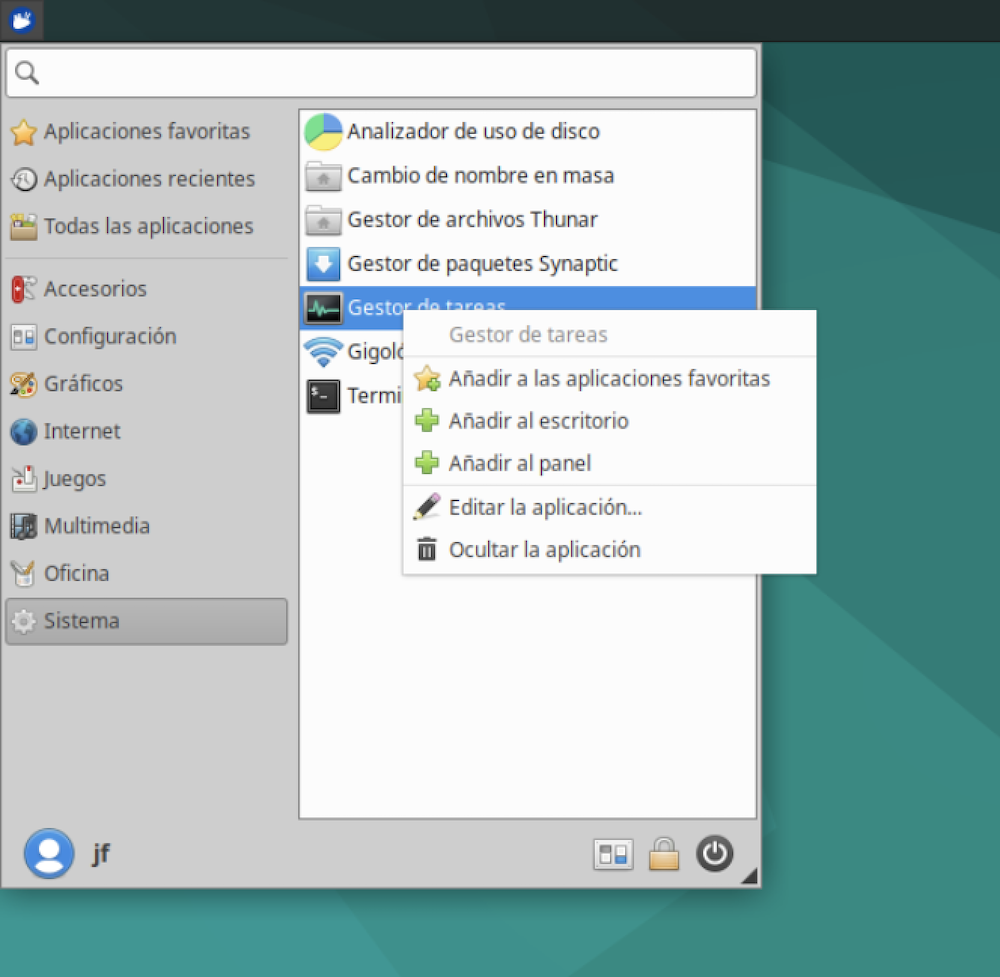
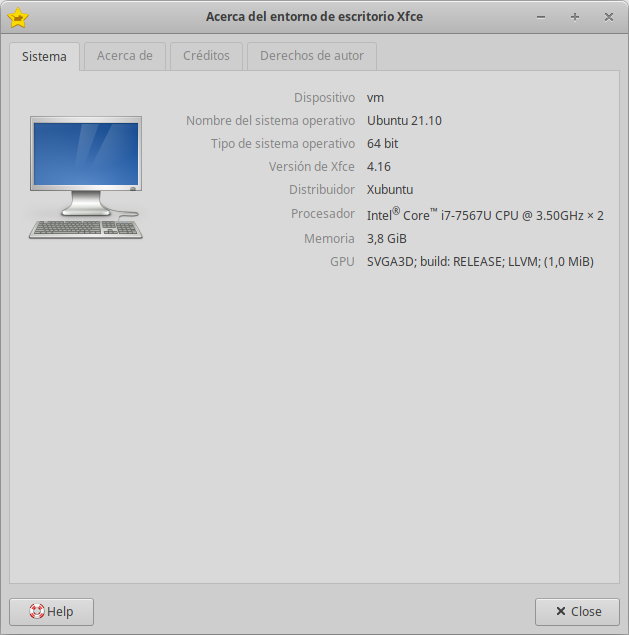

Trabajando con Linux¶
Una vez instalada y operativa la máquina virtual, vamos a mencionar algunas de las cosas que podemos hacer con ella.
El manual de Xfce¶
El aprendizaje de Linux pasa por tres etapas:
- entender como funciona el escritorio
- aprender los comandos de linux y sus interioridades
- explorar el funcionamiento de nuestras aplicaciones favoritas
En cuanto a las aplicaciones, tendremos que acudir al manual de cada una de ellas. Los comandos de linux son herencia del sistema operativo UNIX, y en la web podemos encontrar multitud de manuales.
En lo que se refiere al manejo del escritorio, tendremos que mirarnos el manual de xfce (o el del escritorio seleccionado), lo que nos permitirá aprender a configurarlo, las utilidades que incluye, y como sacarle el máximo provecho. Ubuntu proporciona un manual en su página web.
También podemos acudir a la página web del proyecto Xfce. La documentación está aquí.
Favoritos¶
En el menú de aplicaciones, dentro de la categoría “favoritos”, podemos añadir y quitar aplicaciones. Para ello, seleccionar una aplicación del menú, y con el botón secundario del ratón mostramos el menú emergente y pulsamos en añadir a favoritos.

Si ya está en esa categoría, se mostrará la opción contraria, eliminar de favoritos.
Capturas de pantalla¶
Como me gusta explorar las aplicaciones instaladas y tomar notas, suelo guardar “pantallazos” del escritorio linux o de alguna ventana. Para ello tenemos una aplicación en Accesorios > Captura de pantalla que permite:
- capturar todo el escritorio virtual
- capturar solo la ventana activa
- podamos capturar una región del escritorio
Las imágenes tomadas se pueden guardar en alguna carpeta de la máquina virtual, o bien en la compartida con la máquina física, o bien copiar al portapapeles.
Atajos de teclado¶
Podemos configurar las combinaciones de teclas para realizar tareas varias. Por ejemplo, por defecto tenemos:
- para desplegar el menú de aplicaciones se usa la tecla
super(en mac,command) - para abrir el archivador de archivos,
super+E - la emulación de terminal se abre con
ctrl+alt+T. - para minimizar todas las ventanas y mostrar el escritorio se usa
super+D. - podemos hacer un recorrido por las aplicaciones en ejecución con
alt+tab - podemos introducir un comando con
alt+F2 - las ventanas se cierran con
alt+F4
Para revisar estas configuraciones, ir al menú de aplicaciones > Configuración > Teclado > Atajos de las aplicaciones.
Aplicaciones¶
Echemos un rápido vistazo a algunas aplicaciones que vienen instaladas por defecto con Xubuntu.
Libre Office¶
Libre Office es una completa solución de oficina que proporciona editor de textos, hoja de cálculo, presentaciones, etc. Es más o menos compatible con Microsoft Office. Véase https://es.libreoffice.org para más información.
Tenemos documentación en https://documentation.libreoffice.org/es/documentacion-en-espanol/.
Navegador web¶
Xubuntu incluye un navegador web llamado Mozilla Firefox. Página web, https://www.mozilla.org/es-ES/firefox/.
Correo electrónico¶
Se incluye de serie un programa de correo electrónico llamado Thunderbird. A iniciarlo, basta con introducir nuestro correo y contraseña para aque Thunderbird se encargue de verificar permanentemente si hay correos nuevos.
Visor de documentos¶
Para visualizar documentos en formato PDF, PostScript, etc. Xubuntu proporciona un programa llamado Atril.
También tenemos un programa visualizador de imágenes llamado Ristretto.
Escáner de documentos¶
Se proporciona un programa para escanear documentos.
Photoshop¶
El equivalente es el célebre programa GIMP. Página web: https://www.gimp.org/
Reproductores de música y vídeo¶
En el apartado multimedia encontraremos dos reproductores, Parole y Rhythmbox. Parole es el reproductor proporcionado por el proyecto Xfce, y su página web es https://docs.xfce.org/apps/parole/start.
Rhythmbox es el reproductor multimedia de Gnome. Página web: https://wiki.gnome.org/Apps/Rhythmbox
Grabador de CDs y DVDs¶
El programa suministrado por Xfce es Xfburn
Utilidades varias¶
- Calculadora
- Sencillo editor de archivos de texto mousepad
- Utilidad de notas sobre el escritorio
Software a instalar¶
Veamos algunos programas de interés:
-
Programas gráficos:
- Pinta: Un programa de dibujo que emula el popular “Paint” de Microsoft.
- KolourPaint: El programa de dibujo del escritorio KDE. Aunque usemos otro escritorio, como en este caso Xcfe, podemos usar las herramientas de KDE
- MyPaint: Otra alternativa de dibujo.
- Shotwell Photo Manager: El gestor de fotos del escritorio GNOME.
-
Internet:
- Chromium: el navegador web de Google.
- Opera. Un navegador alternativo a Firefox.
- Evolution: un gestor de correo alternativo, que incluye calendario, gestión de tareas, etc
- Deluge: un gestor de descargas bitTorrent.
- Marble: alternativa a google earth.
- FileZilla: cliente FTP
- Pidgin: programa de mensajeria
- Skype
- Dropbox: gestión de almacenamiento en red
-
Oficina:
- Evince, un visualizador de pdf y otros documentos.
-
Sonido y video:
- VLC Media Player - para ver vídeos
- Amarok - gestor de música
- Sound Juicer CD Extractor - para copiar CDs
- Totem - media player (video/audio)
- K3B - graba CD/DVD
- Brasero - otro grabador de CD/DVD
- Audacity - editor de audio
- Kino - editor de video
Información del sistema¶
¿Que versión de Ubuntu tengo? ¿Que versión del programa de escritorio Xfce le acompaña? La aplicación “Acerca de Xfce” muestra un informe del sistema:
